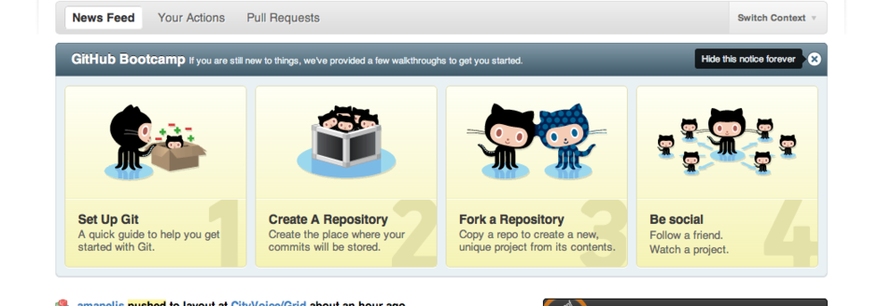

Github's new helper
This post is from the Alex Baldwin Posterous Archive
 Minimal way of doing a "walkthrough", that lets people click to what they are interested in rather than forcing steps. Also, really easy to code this in to an existing site.